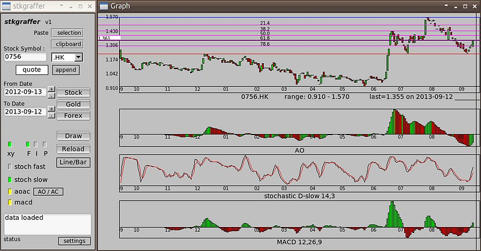

|
STKgraffer Stock charts for Linux STKgraffer is written in c++ and FLTK. Project Stage : Idea Infancy Basic. v2. Features
Can accept user input stock and forex symbols. Get current quote Get historical for charts Get forex or gold historical Main chart (line,bar), AO/AC, MACD, Stochastic (slow,fast/line,bar). Append current quote to chart Invert or Flip data Fibonacci levels draw lines. Todo user list, recent list, save/load chart. Quirks Sometimes misaligns between charts, depending on resizing of window. Cursor to price scale - unconfirmed accuracy.
|
||
| Screenshot :  Download - (app outdated) |